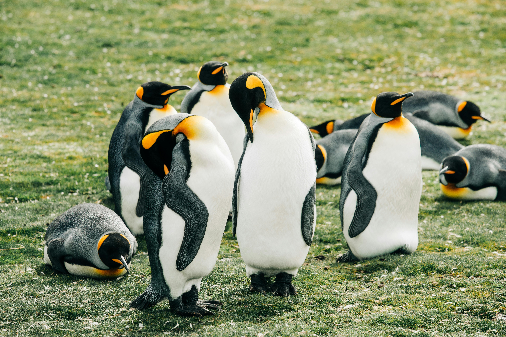
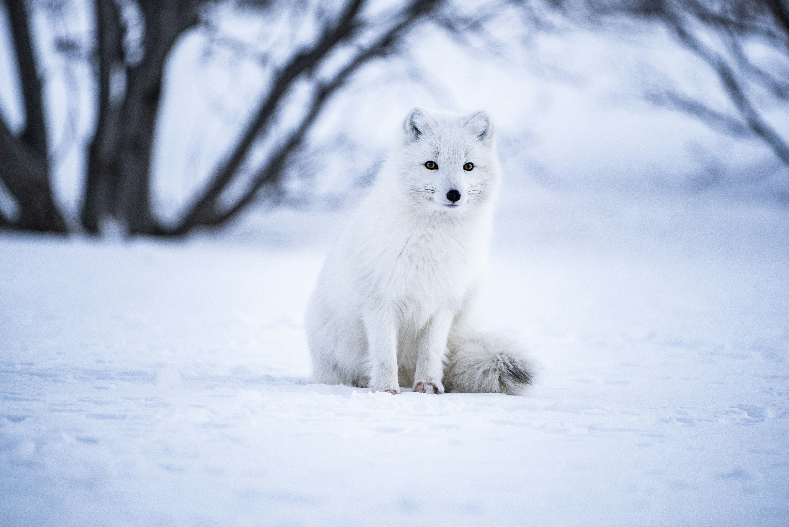
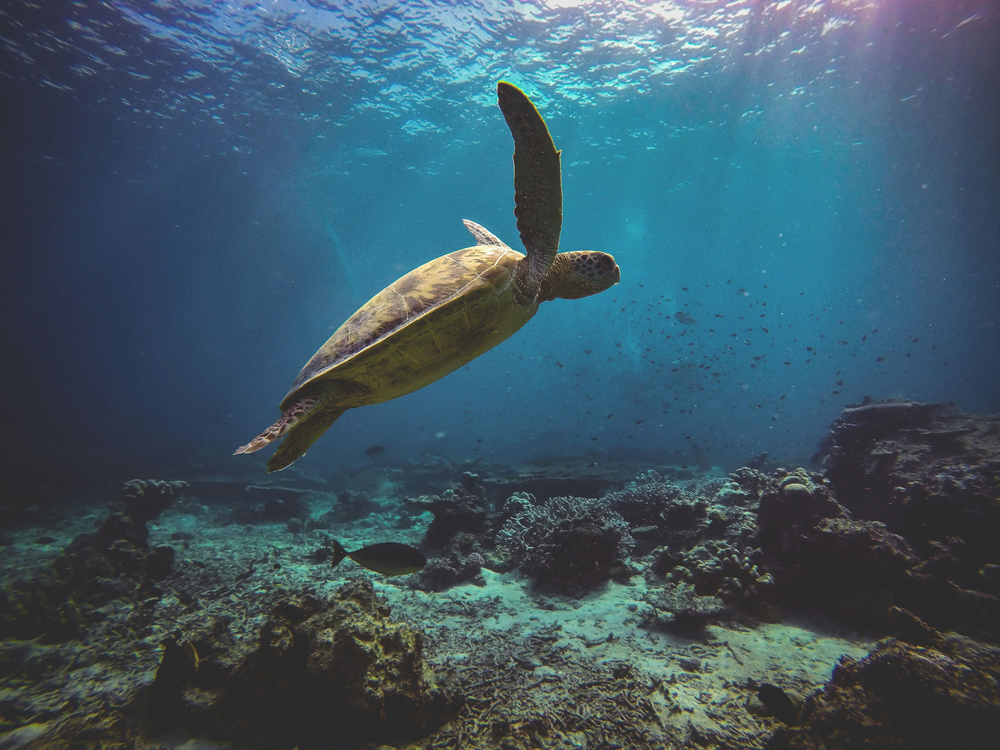

A heartwarming image of two otters peacefully sleeping, cuddled up together on soft
ground. One otter’s head rests
gently on the body of the other, creating a serene and intimate moment. Their sleek,
water-drenched fur contrasts
against the plush environment around them.

A group of emperor penguins waddles gracefully across a patch of soft, green grass.
Their black and white feathers,
highlighted with yellow on their necks, stand out against the vibrant backdrop. Despite being
far from their icy home,
they move with purpose, creating a serene and unexpected scene in this grassy landscape.

An Arctic fox trots through a snow-covered forest, its white fur blending seamlessly
with the wintery surroundings. The
trees, heavy with snow, create a peaceful backdrop as the fox moves gracefully, its bright eyes
scanning the quiet,
frozen world around it.
A seal rests on a sandy beach, basking in the warm sunlight. Its sleek, shiny body
contrasts with the soft, golden sand
beneath it. The gentle waves lap at the shore, and the seal lazily looks out at the horizon,
enjoying the peaceful
coastal environment.

A turtle swims serenely through the open ocean, its flippers gliding effortlessly. The
water is clear and calm, with
distant fish barely visible in the background. Sunlight streams through the surface, casting
gentle patterns across the
turtle’s shell as it moves steadily in the vast, tranquil sea.